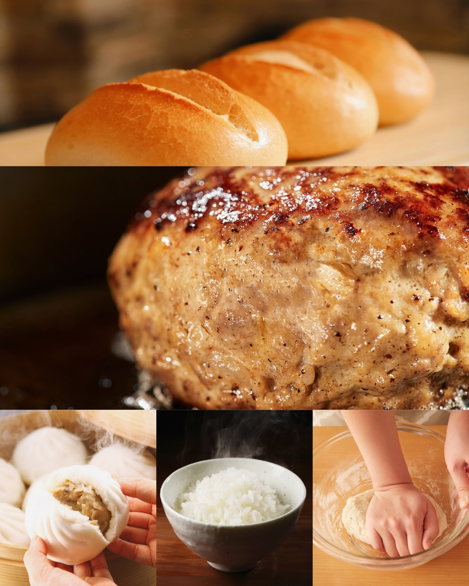
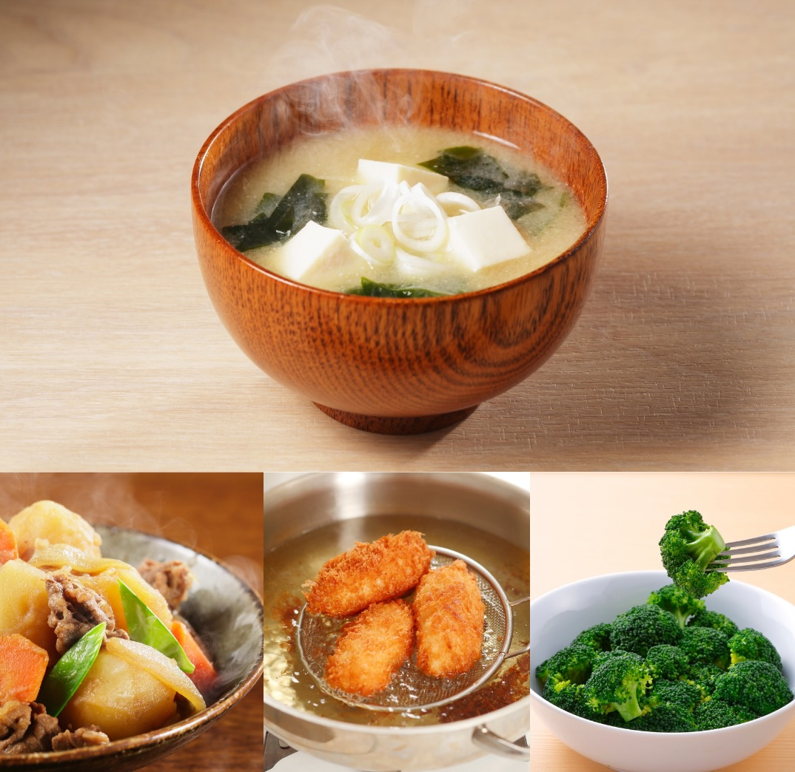
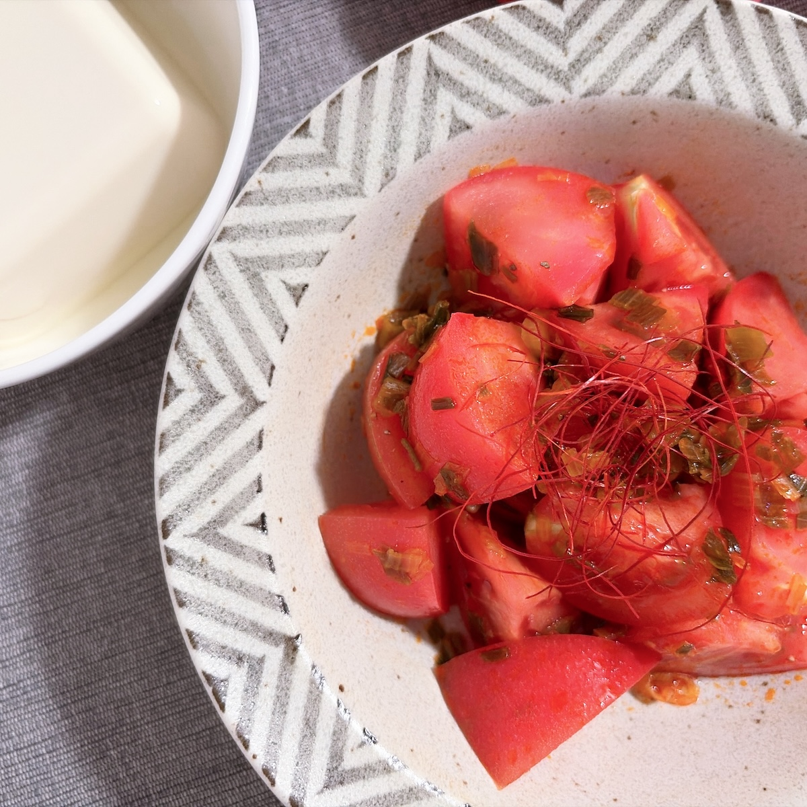

RECIPE
10月のメニュー

超初心者向け 500円体験レッスン
60分
1回限定
下記からお選びください
-
かわいい♪動物クリームパン＆コーンクリームスープ
動物やハロウィンなど、好きな形・好きな表情のクリームパンを作りましょう。
-
ポルチーニ薫る、包み焼きハンバーグ＆オニオンスープ
デミグラスソースにポルチーニを加え、オーブンで包み焼きにする見た目も豪華なメニューです。
基本レッスン（中華）
90分
-
中華まん２種
手作りの生地で、肉まん＆胡麻あんまんを蒸篭で蒸しあげます。
-
空芯菜のにんにく炒め
シャキシャキとした食感を楽しめる中華ならではの炒め物です。
-
なめらかマンゴープリン
マンゴーピューレとゼラチンを使ったプリンです。
本格レッスン（和食）
90分
-
焼き鰤大根
鰤大根を焼き付けて作る、すこし目新しいレシピです。
-
柿釜
くり抜いた柿に、白和えを盛り付けます。
-
はんぺんのお吸いもの
お出汁の取り方をしっかり学びます。
-
鍋炊きご飯
お米を鍋で炊く方法をマスターしましょう。
9月のメニュー

超初心者向け 500円体験レッスン
500円
1回限定
下記からお選びください
- 秘伝の煮込みハンバーグ＆オニオンスープ
- スパイスキーマカリー＆手ごねナン
本格レッスン
2〜3時間
【旬を味わう初秋の和食】
おうちで楽しむ初秋の懐石風献立と、魅せる食卓スタイリング
- 浅利と蓮根の炊き込みご飯
- 菊花豆腐のお吸い物
- 栗と練乳のほうじ茶プリン
基本レッスン
1〜1.5時間
Aレッスン（和食）
【1時間で基礎マスター】
鍋炊き秋鮭ごはんといりこ出汁でつくる基本の和食
- 秋鮭と茸の炊き込みご飯
- レモン浅漬け
- だし巻き卵
- いりこだし味噌汁
Bレッスン（洋食）
【ダマにならない！】
手作りホワイトソースとオーブントースターで焼く簡単手ごねパン
- ほうれん草と海老のグラタン
- 手ごねパン
- 卵たっぷりポテトサラダ
- マチェドニア風フルーツポンチ
8月のメニュー

超初心者向け 500円体験レッスン
- 秘伝の煮込みハンバーグ＆オニオンスープ
- スパイスキーマカリー＆手ごねナン
基本A
- 群馬県産トマトのねぎラー油和え
- 夏野菜のさっぱり肉じゃが
- 艶々！鍋炊きごはん
- いりこだしで作る、お豆富のお味噌汁
- レンジで簡単♪わらびもち